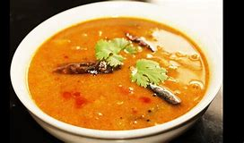

Sambhar Recipe : How to make Sambhar
If you are a fan of South Indian cuisine, you must be aware of the gravy dish with which dosa and idli are
enjoyed. Known as Sambhar, this side dish is quite popular in southern India and is prepared using chana dal
toor or arhar dal along with several veggies.

Ingredients of Sambhar
3 stem removed eggplant/ brinjal
1 cup toor daal
1 teaspoon sambhar powder
1/2 teaspoon salt
1 pinch fenugreek seeds
1 teaspoon coriander seeds
2 cloves garlic
8 baby onions
1/4 teaspoon powdered turmeric
1/2 cup tamarind
1 tablespoon refined oil
1/2 cup chana dal
1 red chilli
1/2 tablespoon grated coconut
Recipe-
Step 1 Prepare the masala for sambhar
To prepare this easy sambhar recipe, put a frying pan over medium flame and heat a little oil in it.
Once the oil is hot enough, add fenugreek seeds, chana dal, coriander seeds, dry red chilli, 2 baby
onions, garlic and grated coconut in the same pan. Fry the ingredients for a minute or so. Once done,
remove from the flame and allow it to cool. Then grind all these ingredients in a blender and keep aside
till further use.
Step 2 Saute the dals and brinjals
Now, heat little oil in a frying pan over medium flame. Saute the remaining baby onions and brinjals for
a minute or two. Add the pureed tamarind to a pan over medium flame. Add salt, turmeric powder, sambhar
powder, onions and brinjals. Bring the mixture to a boil. Then add the ground masala, toor dal and bring
to a boil again on low flame. If you want your Sambhar to be delicious you can dry roast the spices with
some curry leaves, grind it and then add it to the Sambhar. This will add on to the taste and aroma of
this recipe.
Step 3 Prepare the tempering and pour over the sambhar
Meanwhile, add little refined oil in a separate pan and fry the tempering ingredients. To make it in the
authentic South Indian-style replaced refined oil with coconut oil, this will give a nice aroma to the
Sambhar. Transfer the dish in a serving bowl and garnish it with grated coconut, fried red chillies and
curry leaves. You can add garnishing as per your palate preference. Serve hot with steamed Rice, Dosa or
Idli. You can also pair it with chutneys of your choice and relish it with your loved ones.
Step 4 Tips for making lip-smacking Sambar at home
1. Known for its tangy and spicy flavours, the best part about sambhar is the spice powder used to
prepare it. Make sure that you use a good quality one while making the sambhar.
2. Try to add as many
veggies in it to make it colourful and flavourful, and probably steam them so that you have a great
taste.
3. To make it tangy, don’t use amchoor or dry mango powder in it. Try to use soaked tamarind in
it, as it will make the sambhar tastier.
4. Make sure that you maintain the consistency of the sambhar.
It should be thick but of pouring consistency.
5. Last, but not the least, do not forget to add
drumsticks in it. You can only get the real taste of sambhar when you add drumsticks in it.
Back to Categories (श्रेणियों में वापस)
Back to Recipes (व्यंजनों पर वापस जाएं)